Like all Texins Flying Club events, this one didn't just happen. It was built over months of planning, coordination, and preparation — and then the sky delivered its part: a bluebird day, nearly perfect spring weather, light winds, smooth air, and clear skies that set the stage for something worth remembering.
Safety First. Always.
Before a single engine started, the tone was already set. At our March 14th membership meeting, crews aligned, expectations were clear, and safety was front and center. Each Pilot in Command owned their decision. Everyone was reminded to fly their own flight — no pressure to launch, no pressure to continue.
The goal was simple: arrive safe, enjoy the day, return safe. That mindset isn't just something we say. It's how this club operates.
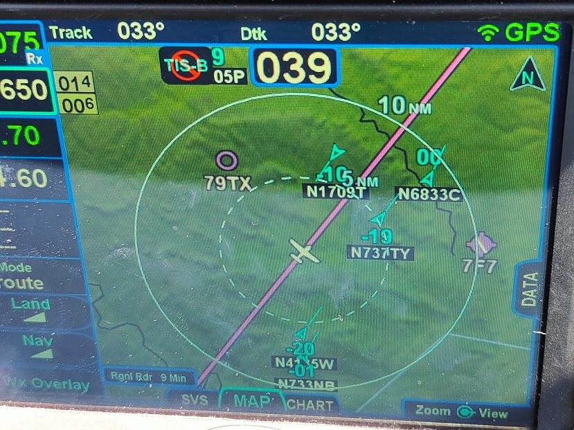
Left: Wheels up just before sunrise. Right: ADS-B traffic — multiple TFC aircraft in trail heading south.
Wheels Up at First Light
With that foundation in place, most crews launched right at sunrise — some even just before. Departures weren't planned to be staggered, but it worked out that way. Airplanes flowed out cleanly and efficiently, exactly how you'd want it.
"Hey…we're seeing a lot of flight plans to T82 this morning. What's happening down there today?"
— McKinney Tower, upon receiving the TFC IFR clearance requestThat was the moment it clicked. This wasn't just a fly-out. This was Texins Flying Club showing up.
The flight south was exactly what you hope for — cruising at 8,000 feet, smooth air, no surprises. Each crew managed their own timing and routing, just as planned, with no pressure to bunch up or force coordination.
Arriving into Gillespie County Airport, things lined up just as well. With only a couple of aircraft in the pattern, we crossed midfield, entered left downwind for Runway 32, and landed without delay. The south ramp was full, as expected, but the north ramp had ample parking for the whole group.
The Hangar Hotel
By 10:30am, the full group had gathered at the Tiki Hut to kick off the day properly. First stop: the Hangar Hotel — and calling it "just a stop" doesn't do it justice. It's an experience.
Designed around a full WWII theme, the owners set out to create both a hotel and diner that feels like stepping back into the 1940s. Every room and detail reflects that vision — from the vintage travel posters lining the walls to the period artifacts throughout the lobby.
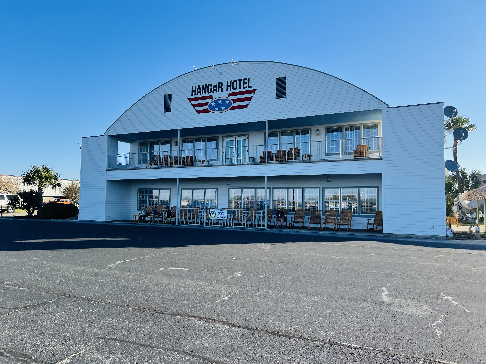
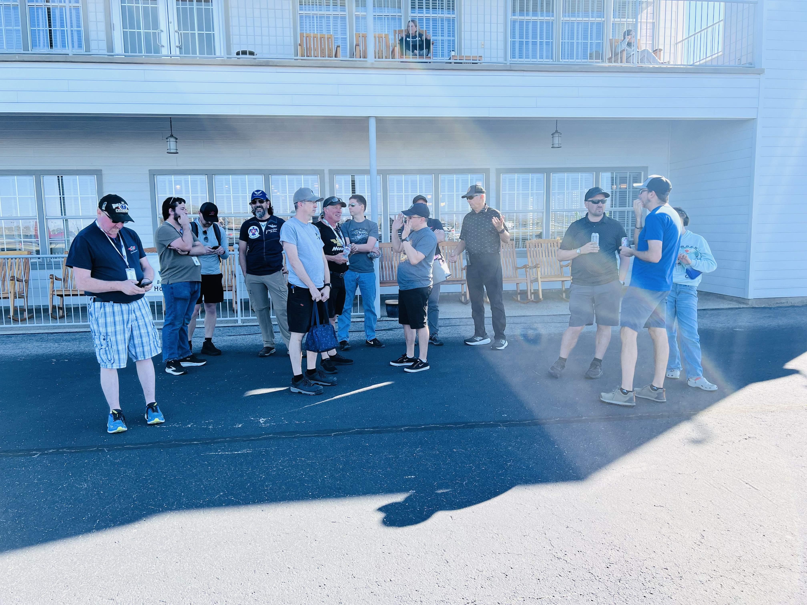
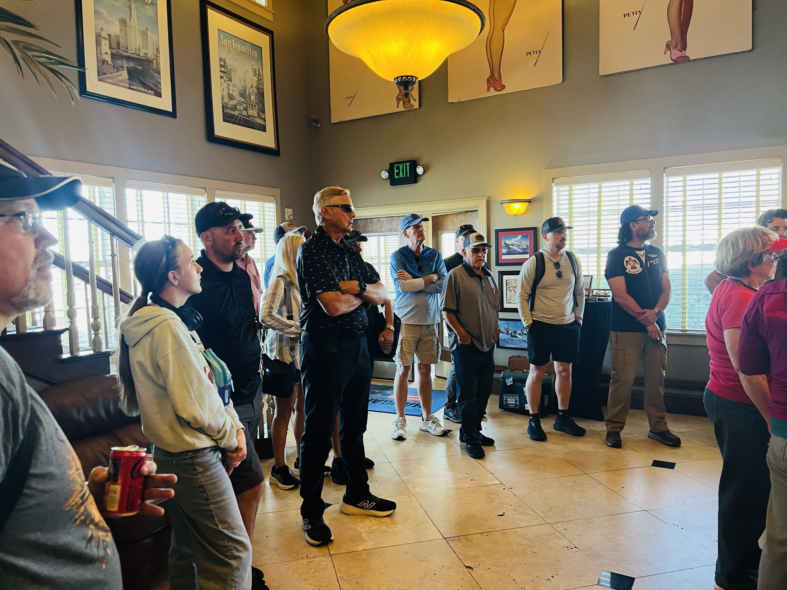
The Hangar Hotel at Gillespie County Airport — a WWII-themed gem that draws pilots from across the state.
While gathered in the lobby, Cindy brought the place to life, sharing the story behind it and pointing out a number of WWII-era artifacts on display. Two highlights stood out: the Officer's Club, which opens in the evenings with live music and drinks, and the viewing balcony — where you can sit back, relax, and watch aircraft arrive and depart.
It's the kind of place you don't rush through.
The Story Behind the Field
From there, we walked over to the terminal building for one of the most meaningful parts of the day. Dennis Hannemann shared the story of his father, Hans Hannemann, and the founding of Gillespie County Airport.
Hans wasn't just involved — he drove it. From pushing through a contested bond election to helping establish early operations, he played a central role in bringing the airport to life.
Lighting the Way
In the airport's earliest days, there were no runway lights. Pilots would call ahead, and Hans Hannemann would personally coordinate arrivals — lanterns set out, cars positioned along the runway to light the way for aircraft landing at night. It's the kind of dedication that built general aviation from the ground up.
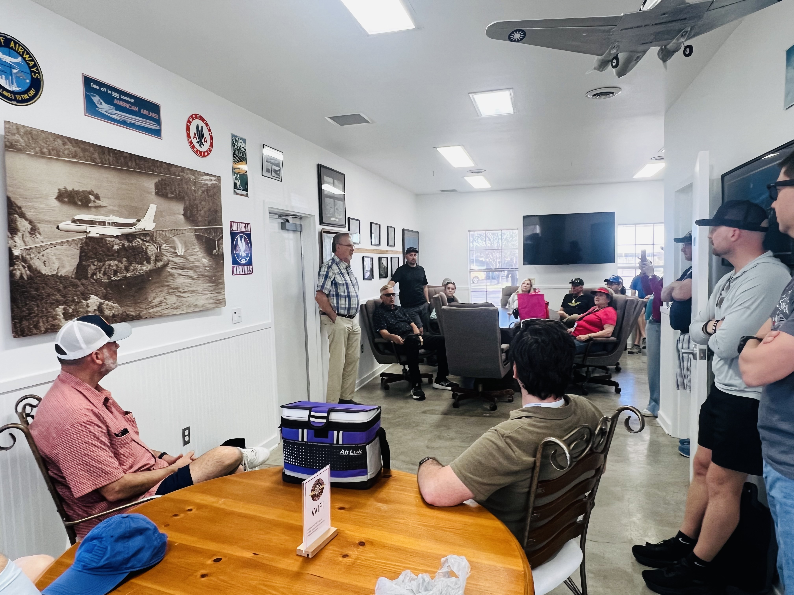
Dennis Hannemann shares the remarkable history of Gillespie County Airport in the terminal building.
Then came a turning point: famed entertainer Arthur Godfrey, a frequent visitor to Lyndon B. Johnson's nearby ranch, personally paid to have runway lights installed — changing the trajectory of the airport forever. This airport wasn't given. It was built.
TacAero: Raising the Bar
That history set the stage perfectly for the next stop. At TacAero, Kris and Casey walked us through an operation that represents the modern edge of flight training.
The depth of what they offer is serious: tailwheel training in Carbon Cubs, advanced owner training, and backcountry flying both locally in Texas and up in Northwest Arkansas using Fly Oz strips. Aerobatic training in the GameBird GB1, vintage aircraft like the Waco, warbird experiences including scaled P-51 platforms, and even floatplane training.
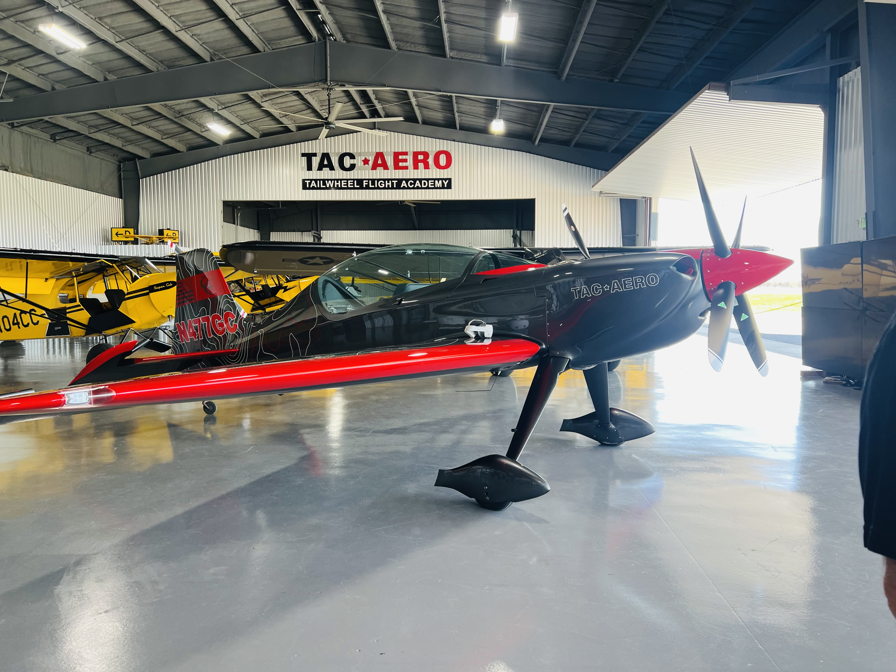
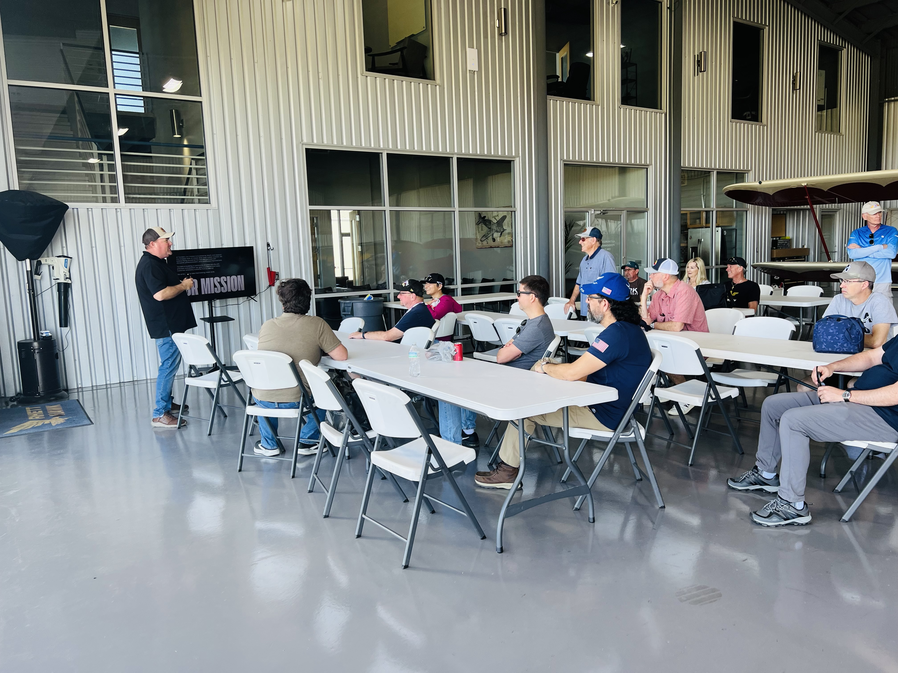
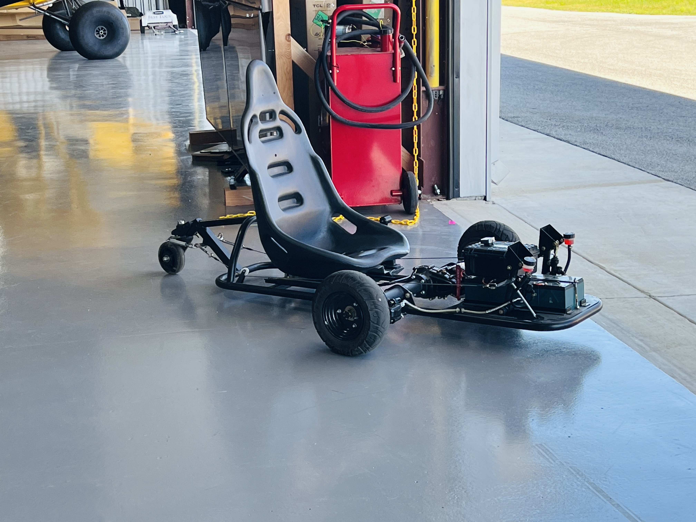
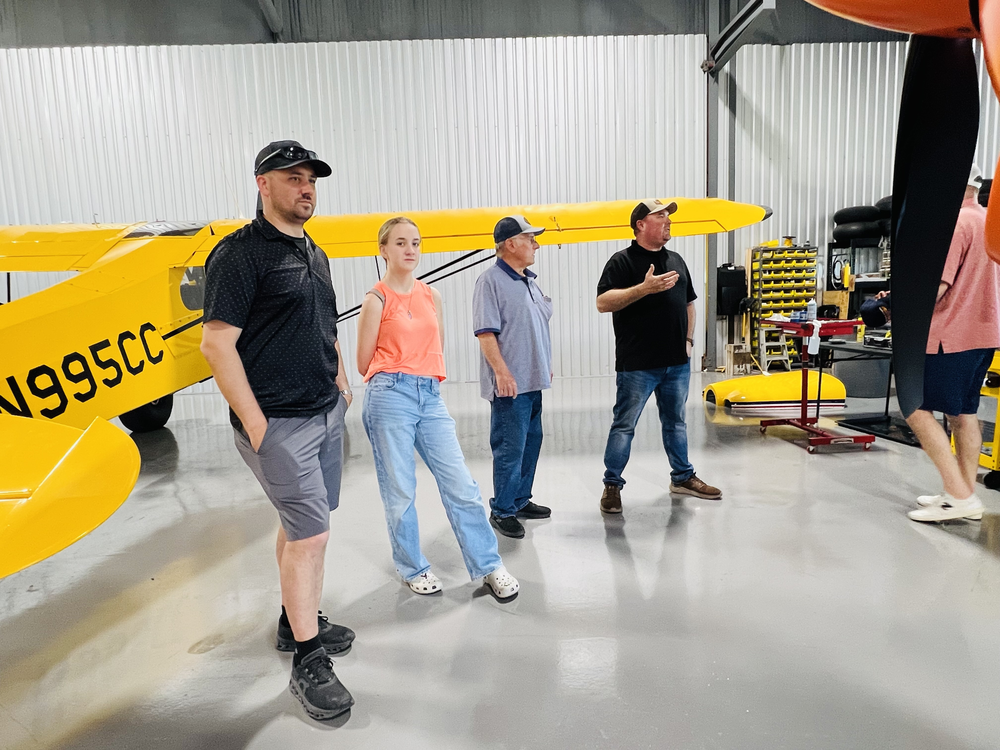
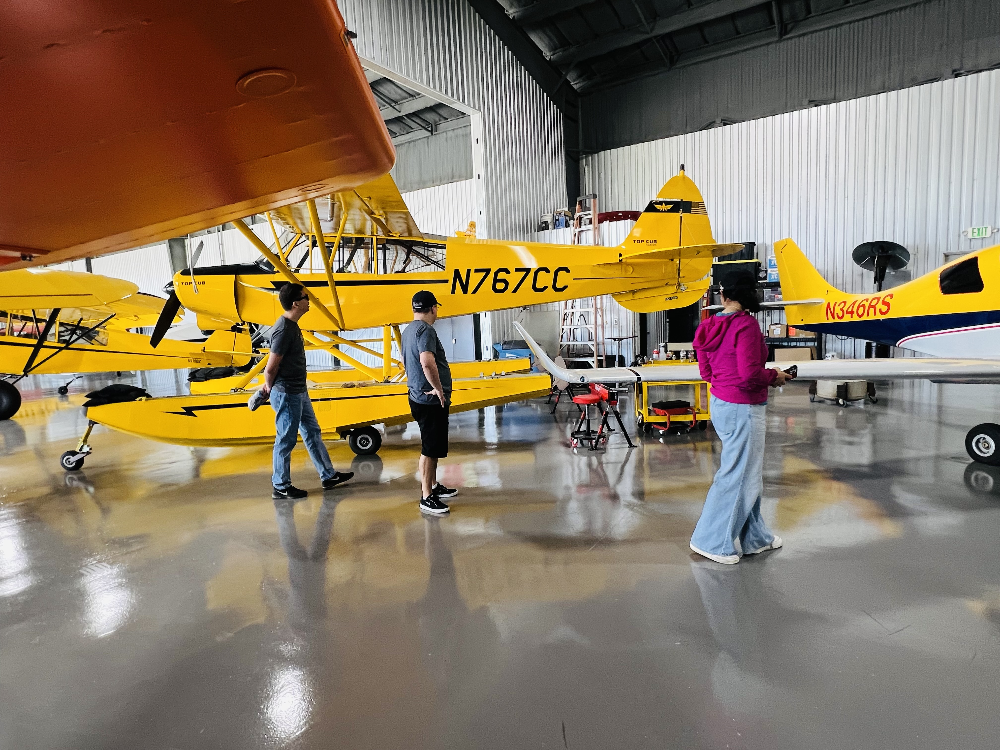
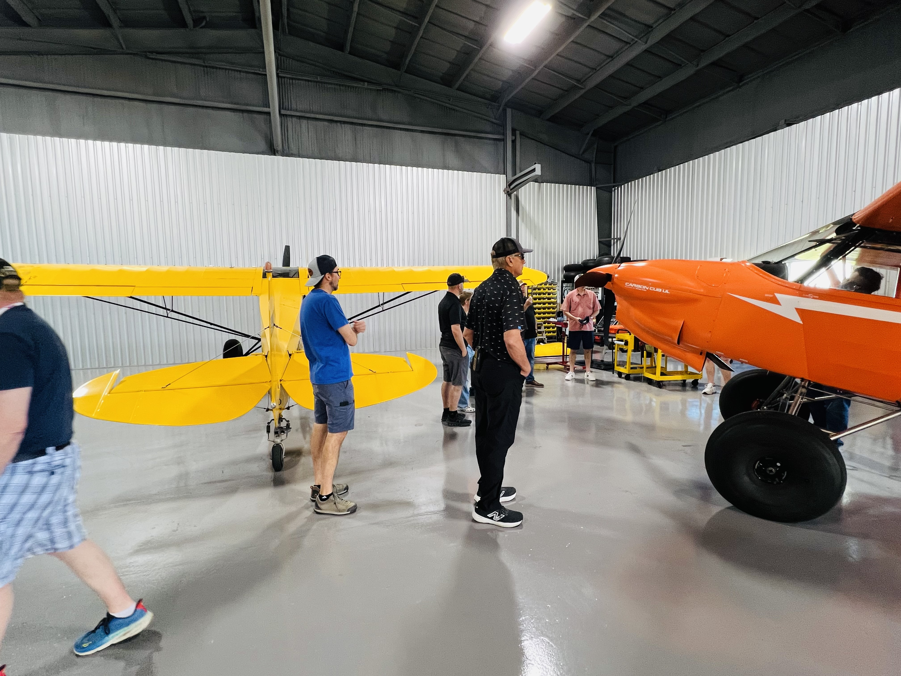
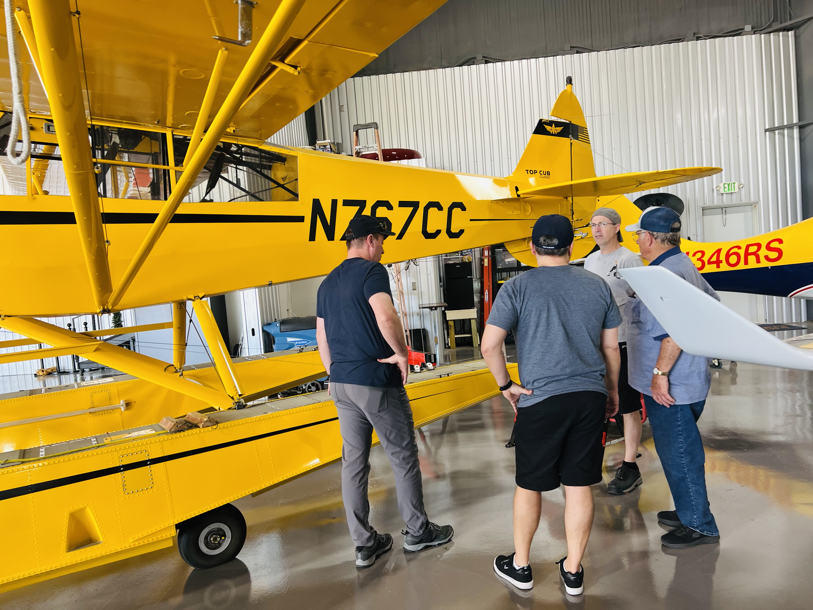
TacAero's fleet includes Carbon Cubs, the GameBird GB1, Top Cubs on floats, and more — a serious operation for serious training.
With a VR headset on, you can move through the structural, electrical, and fuel systems of the GameBird and actually visualize how the aircraft is built and operates. It's a completely different way to learn an airplane.
There was also a strong connection back to last year's fly-out, with TacAero working closely with both Fly Oz and Game Composites as the factory trainer for the GB1. For anyone in the club interested in advancing their skills beyond the standard curriculum, this is the kind of operation worth knowing about.
The Ride Home
We wrapped up with a picnic lunch, good conversation, and a group that clearly didn't want the day to end. It's the kind of gathering where conversations pick up right where they left off, and new ones start just as easily. Eventually, crews loaded up and launched for home.
Shortly after departure, Houston Center lit up with call after call:
"VFR request… flight following to McKinney…"
Again and again.
The return flight was just as smooth — VFR flight following at 7,500 feet, cool air and clear skies. As we approached the Dallas area, we secured a Class Bravo transition, delivering incredible views of downtown Dallas and a direct pass over Love Field. A pretty special way to wrap up the day.
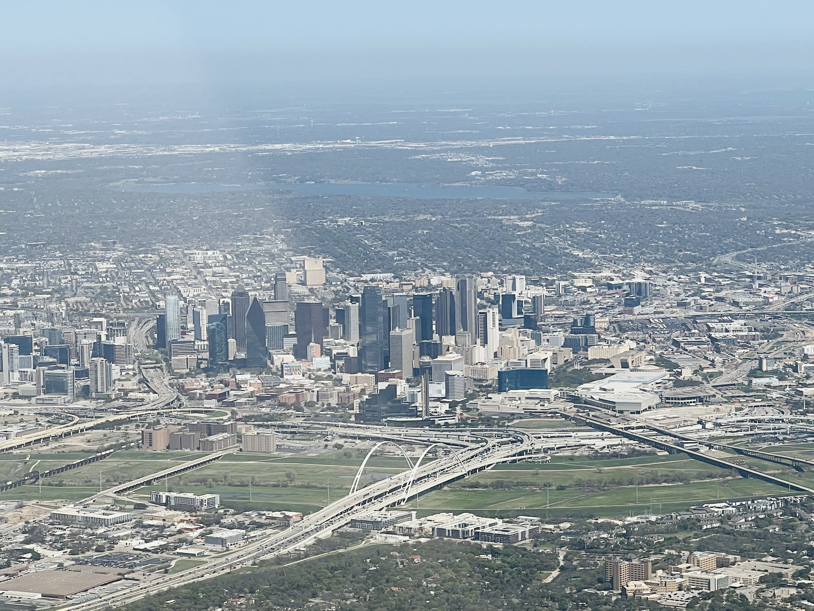
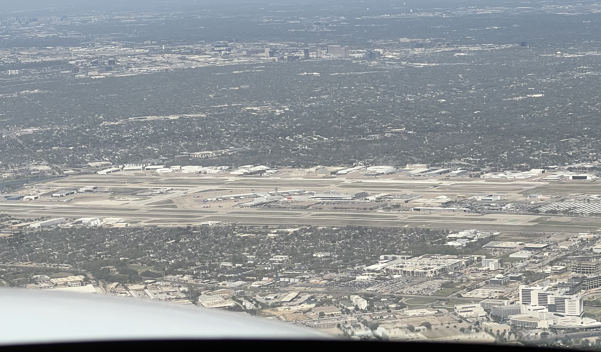
The return: a Class Bravo transition gave the group stunning views of downtown Dallas and a flyover of Love Field.
We don't just talk about aviation… we go live it.
Great airplanes. Great people. A day that reminds you why you started flying in the first place. That's Texins Flying Club — and it's only getting better.